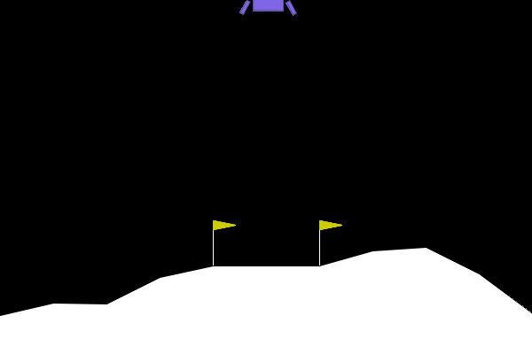

So, PPO….it seems like the transformer of reinforcement learning: “What should we do?”, “Eh, shove it through PPO and see what happens”. So again, this is just me replicating PPO and imploring anyone who got lost on the internet and is reading this to just go read the paper instead: Schulman et al. (2017).
If you are just here for some code, here is a colab notebook that runs hyperparameter tuning with wandb and ray-tune on my PPO implementation. At the end you can grab a trained model from wandb, run an episode, and download a gif of the episode.
The Objective
Mmmm, ok again….the paper….but I’ll go over the main pieces presented therein. PPO is, as it’s name suggests, a policy gradient algorithm, in the sense that it tries to maximize expected performance (total reward) by directly leveraging the gradient of the performance with respect to the policy parameters. That is, we want to maximize \(J(\pi_{\theta}) = E_{\tau \sim \pi_{\theta}}[R(\tau)]\) and can derive an expression for the gradient \(\nabla_{\theta} J(\pi_{\theta})\) that we can approximate by sampling episodes and computing gradients. For a good intro to policy optimization, I like this intro by OpenAI.
PPO is different from ‘vanilla’ policy optimization in that it maximizes some weird surrogate objective function:
\[ L^{CPI}(\theta) = E_{t \sim \pi_{\theta_{old}}}\left[\frac{\pi_{\theta}(a_t|s_t)}{\pi_{\theta_{old}}(a_t|s_t)}A(s_t, a_t)\right] \]
where \(A(s_t, a_t)\) is the advantage function, which is the difference between the value function at time step \(t\) and some bootstrapped version of the value function at time step \(t\), which I’ll show later. The subscripts \(\theta\) and \(\theta_{old}\) indicate the parameters that will be updated, and a ‘frozen’ version of the parameters that will be used to compute the ratio of the new policy to the old policy. In words, the part of the objective inside the expectation says if the action we took at time step \(t\) was better than we currently expect (positive advantage), increase the probability of that action. If it was worse than we expect (negative advantage) decrease the probability of that action. Each example inside the expectation is sampled according a policy with the old parameters, \(\pi_{\theta_{old}}\).
Okay, so if you stare at that loss there, you might notice that the algorithm will probably want to make very large updates to \(\theta\). PPO addresses this by ‘clipping’ the probability ratio to prevent these large updates, like so:
\[ L^{CLIP}(\theta) = E_{t \sim \pi_{\theta_{old}}}\left[\text{min}\left(\frac{\pi_{\theta}(a_t|s_t)}{\pi_{\theta_{old}}(a_t|s_t)}A(s_t, a_t), \text{clip}\left(\frac{\pi_{\theta}(a_t|s_t)}{\pi_{\theta_{old}}(a_t|s_t)}, 1 - \epsilon, 1 + \epsilon\right)A(s_t, a_t)\right)\right] \]
Where clip\((x, a, b)\) is a function that clips \(x\) to be between \(a\) and \(b\) and \(\epsilon\) is a hyperparameter that controls the size of the clipping.
One thing that was weird to me, is that this loss does not have the log probability in the expectation there, as is seen in the derivation of the vanilla policy gradient. Well, actually, it sort of does, but it’s just easier to write it the way they do, see this blog post for an explanation.
Computing \(A(s_t, a_t)\)
In the paper they mention two ways of computing the advantage. One is to simply compute the difference between the value function at time step \(t\) and the rewards-to-go from time step \(t\) plus the value function at the last time step:
\[ \hat{A}(s_t, a_t) = -V(s_t) + \sum_{t'=t}^{T}r_{t'} + V(s_T) \]
As mentioned in the paper, we can compute a weighted version of this return Schulman et al. (2018) Sutton and Barto (2020) as so:
\[ \hat{A}(s_t, a_t) = \sum_{t'=t}^{T}(\gamma \lambda)^{t'-t}\delta_{t'} \]
Where \(\delta_{t'} = r_{t'} + \gamma V(s_{t'+1}) - V(s_{t'})\) is the TD error at time step \(t'\) and \(\lambda\) is a hyperparameter that controls the weighting of the TD error. I show my implementation of this and highlight a mistake I made.
First, lets assume I’ve calculated the rewards-to-go, \(G_t = \sum_{t'=t}^T \gamma^{t'-t}r_t'\), and the value function, \(V(s_t)\), for each time step \(t\). First, I compute the deltas:
# given tensor of values val_tensor and tensor of rewards-to-go dsc_rews
deltas = gamma*F.pad(val_tensor[1:], (0, 1), 'constant', 0) + torch.tensor(rew_list) - val_tensorFrom this, I can compute the advantages by starting from the last time step, working backwards, and accumulating the weighted deltas:
# compute advantages from deltas
advantages = []
cur_adv = 0
for t in range(len(deltas)):
cur_adv = deltas[-(t+1)] + gamma * lam * cur_adv
advantages.append(cur_adv)
advantages = reversed(torch.tensor(advantages, dtype=torch.float32))You can use a similar to collect-and-reverse scheme to compute the rewards to go, or you can be an idiot and forget to do that, like me:
dsc_rews = []
cur_rew = 0
# compute discounted rewards
for t in range(len(rew_list)):
cur_rew = rew_list[-t] + gamma * cur_rew
dsc_rews.append(cur_rew)Basically my rewards to go were backwards…christ, look, the indexing isn’t even correct. Consider the situation where I have a large negative reward at the end of the episode, the first action will take the full weight for that failure. Unsurprisingly, my LunarLander agent was a bit timid about approaching the surface. However, shockingly, the algorithm still seemed to learn something with this glaring mistake, though it was incredibly inconsistent. My intuition is that successful episodes would still propagate positive reward signal to all state action pairs, even if the actual values were inaccurate, so the agent was still able to attempt to learn good behavior.
Okay, so now the correct way to compute the rewards to go:
dsc_rews = []
cur_rew = 0
# compute discounted rewards
for t in range(len(rew_list)):
cur_rew = rew_list[-(t+1)] + gamma * cur_rew
dsc_rews.append(cur_rew)
dsc_rews = reversed(torch.tensor(dsc_rews, dtype=torch.float32))Computing the Loss
Okay so we have the advantages, the rewards-to-go, and some log-probabilities. We need to compute that probability ratio thing, multiply it by the advantage and then take the minimum of that and its clipped version. An important thing to remember is that when forming term \(\frac{\pi_{\theta}(a_t|s_t)}{\pi_{\theta_{old}}(a_t|s_t)}{A}(s_t, a_t)\) the only thing that has gradients flow through it is the numerator. The advantage is a static quantity at this point, and the denominator is a frozen version of log-probabilities we saw when collecting experience.
My implementation runs the observations back through the actor and critic to get the quantities we need to be differentiated via autograd (everything below is in the colab notebook).
# cur_batch from a queue of tuples
obs_batch, act_batch, rew_batch, val_batch, log_prob_batch_prev, dsc_rew_batch, adv_batch = zip(*cur_batch)
dist_batch = actor(torch.tensor(obs_batch, device = device))
# this `requires_grad`, log_prob_batch_prev does not
log_prob_batch = dist_batch.log_prob(torch.tensor(act_batch, device=device))
val_batch = critic(obs_batch.to(device))Now I compute the ratio with the differentiable numerator
denom = torch.tensor(log_prob_batch_prev, device=device)
adv_batch = torch.tensor(adv_batch, device=device)
ratio = torch.exp(log_prob_batch - denom.to(device))And compute the minimum of the clipped objective and the unclipped objective, as well as the mean-squared error between the value function estimate and the actual rewards-to-go we observed. The total loss is the negative of the clipped objective plus the value function loss. Note: in the paper they mention an entropy loss to encourage exploration, I show it below, but I don’t use it in my implementation, instead I use a simple exploration scheme where I randomly sample actions at a decreasing probability over training.
sloss = torch.min(ratio * adv_batch, torch.clamp(ratio, 1.0 - config['eps'], 1.0 + config['eps']) * adv_batch).mean()
vloss = F.mse_loss(val_batch.squeeze(), torch.tensor(dsc_rew_batch, dtype = torch.float32, device=device))
# possible entropy loss, we would add this to loss
# entropy = dist_batch.entropy().mean()
loss = -sloss + vlossTraining/Hyperparameter Tuning
I train on the LunarLander environment for 100 rounds of sampling + training, filling a buffer with some number N iterations, and then updating with training batches from that buffer. I also have some fun hyperparameter tuning, varying the following:
learning rate (actor and critic), clipping parameter \(\epsilon\), \(\lambda\) parameter in the computation of the advantage, and discount factor \(\gamma\). The results are in this wandb project. Below is the parallel lines plot showing the effect of hyperparameters.
Many of the training runs stagnate around 0 average reward, others get up to around ~100 average reward. A few seem to be doing okay and then completely collapse…I’m not sure what’s going on here but I’m investigating some methods of alleviating this. Some of the runs maintain a stable reward at over 200, which is what we want to consider it a success. The parameter that training seems most sensitive to is the advantage computation parameter \(\lambda\).
Okay, below is a gif of an episode from the best training run:

It has the ‘correct’ behavior of dropping quickly, before engaging the thrusters to land softly. Rather, it does not have some annoyingly not-awful-not-great behaviors such as just hovering in the air, afraid of crashing, or landing and then refusing to turn off thrusters.